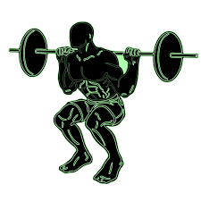
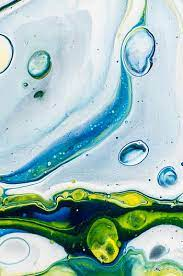

-

- Strong Work Ethic
- I maintain a strong work ethic in the jobs and tasks I do by focussing on the quality of work, and the precision by which I complete the task. I personally feel that the quality of task takes higher priority than time of completion.
- Problem Solving
- I enjoy problem solving and working through complex tasks. Overcoming obstacles in projects or any work evironment is something I have learned throughout my highschool experience, especially as I have been transitioning to college.
- Communication
- Expressing important updates and work related issues to those I work with is something I find of critical importance. I work to communicate with my coworkers and improve relations with those in my work area. With this communication, I help to improve the efficency the job and overall work envirionment
- Creativity
- I am creative in my work and my job so I can find the most efficency and flexibility. Being creative allows me to work around a problem and look at it from a different angle. Creativity allows me also to make the most out of the work I do and receive the most satisfaction.
- Conflict Resolution
- Working hard to resolve conflict is one thing I try to do. Whether it is between myself or other people, I try to find a peaceful solution through moderation. Helping to find a compromise or best path forward is important for those I work with and for the work place.
